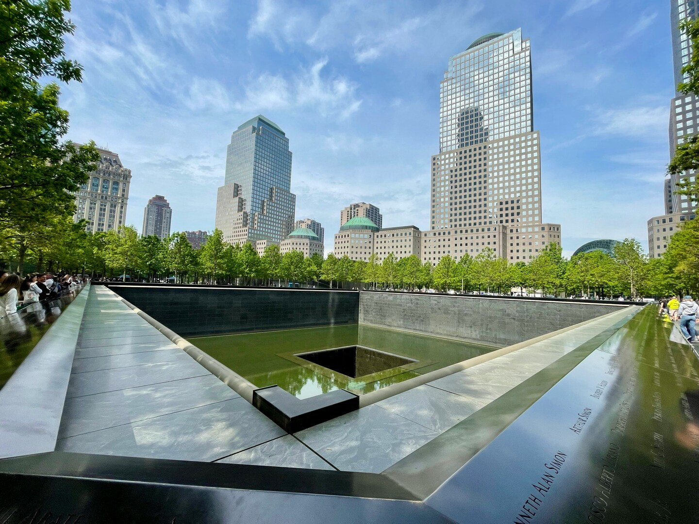
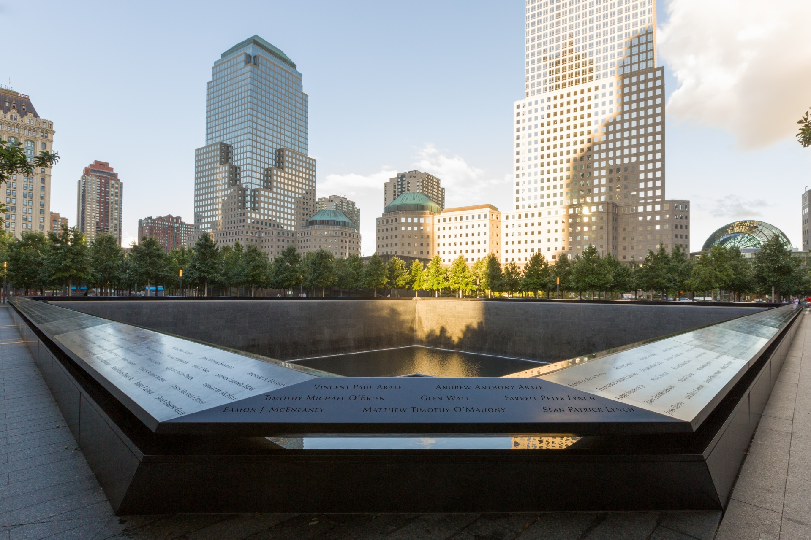
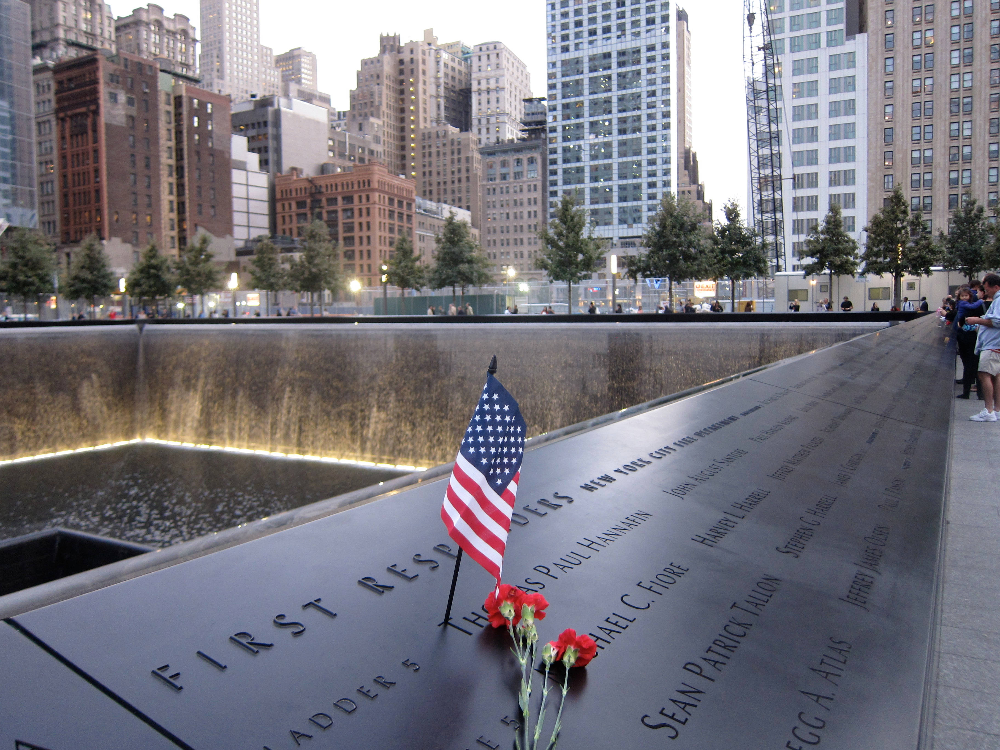

“No day shall erase you from the memory of time.” — Virgil, inscribed at the Museum entrance
On the morning of September 11, 2001, nineteen militants tied to al-Qaeda hijacked four commercial airliners. Two were flown into the North and South Towers of the World Trade Center in Lower Manhattan. A third struck the Pentagon in Arlington, Virginia. The fourth, United Airlines Flight 93, crashed into a field near Shanksville, Pennsylvania, after passengers and crew fought to retake the cockpit. Both towers, each holding tens of thousands of people that morning, collapsed within roughly ninety minutes of impact.
Nearly 3,000 people were killed that day — office workers, visitors, airline passengers and crew, and 343 New York City firefighters, 23 NYPD officers, and 37 Port Authority police officers who ran toward the towers as everyone else ran away. It was the deadliest terrorist attack in human history and the single deadliest incident for American law enforcement and firefighters. It was not the first attack on the site: on February 26, 1993, a truck bomb detonated in the World Trade Center’s parking garage, killing six people and foreshadowing the scale of what was still to come.
In April 2003, the Lower Manhattan Development Corporation launched an international competition open to any adult, regardless of nationality or professional credentials, to design a permanent memorial at the World Trade Center site. It became the largest design competition ever held: 5,201 submissions arrived from 63 countries and nearly every state in the union. A thirteen-member jury — architects, urban planners, and family members of those who had died — spent months narrowing the field.
In January 2004, the jury selected “Reflecting Absence,” submitted by New York architect Michael Arad and refined with landscape architect Peter Walker. The design placed two enormous voids where the towers once stood — recessed pools fed by the largest man-made waterfalls in North America, set within a plaza of more than 400 swamp white oak trees. Construction broke ground in 2006 and continued for five years, guided by a single unbending requirement: every name would be inscribed, and no visitor would ever be more than a few feet from the footprint of the towers themselves.
Every name would be inscribed. No visitor would stand more than a few feet from where the towers themselves once stood.
— The design mandate given to all 5,201 competition entries · 2003The Memorial opened to the public on September 12, 2011, the day after a dedication ceremony marking the tenth anniversary of the attacks. Its twin reflecting pools sit exactly within the footprints of the North and South Towers, each fed by a thirty-foot waterfall — the largest man-made falls in North America — that pours continuously into a lower basin and then vanishes into a smaller void at the center, a design meant to evoke a loss that can never be fully filled.
Bronze parapets ringing the pools carry the names of all 2,983 victims: the 2,977 killed on September 11, 2001, across the Twin Towers, the Pentagon, and the fields of Shanksville, and the six killed in the 1993 bombing. The names are not arranged alphabetically. Michael Arad and the memorial's planners spent years consulting victims' families to place each name beside colleagues, friends, and loved ones who died alongside them — a system the memorial calls “meaningful adjacencies.” More than 400 swamp white oak trees surround the plaza, and each year on the anniversary, a white rose is placed beside the names of those celebrating a birthday that day.

In October 2001, recovery workers found a badly damaged Callery pear tree buried in the debris of Ground Zero, its branches snapped and its trunk charred. Parks workers nursed it back to health at a city nursery for nearly a decade before it was returned to the plaza in 2010, thirty feet tall, and replanted near where it was found. Today the “Survivor Tree” is the only living witness to the attacks still standing on the grounds, and each year seedlings grown from its branches are sent to communities across the country that have endured tragedies of their own.
The museum opened on May 21, 2014, built into the bedrock beneath the plaza and centered on the original slurry wall that held back the Hudson River when the towers fell. Its 110,000 square feet hold more than 60,000 artifacts — twisted steel, recovered photographs, the last column removed from the site, covered in messages from rescue workers — alongside recorded testimony from survivors and family members. In the plaza above, the Memorial Glade, dedicated in 2019, marks a path lined by six stone monoliths inlaid with World Trade Center steel, honoring the responders, recovery workers, and survivors who have since died or fallen ill from exposure at the site.

Behind every name on these bronze parapets is a person who made a choice that morning. Two of them are archived here in full:
Firefighter Stephen Siller → The tunnel was closed. He ran through it anyway.
Rick Rescorla → He sang to 2,700 people on the way down, then went back for one more.
Every September 11th, families gather at the pools before dawn and read the names aloud, one by one, a recitation that now takes hours. Visitors from all fifty states and more than 190 countries have walked the plaza since it opened. Millions more have descended into the museum below to stand beside the last column, to see the twisted steel, to hear the recorded voices of people who did not know, when they left for work that morning, that it would be the last ordinary day.
This archive exists to remind people of what ordinary Americans are capable of — on their best days and, just as often, on their worst. The 343 firefighters, 23 police officers, and 37 Port Authority officers who ran into the towers as everyone else ran out belong in the same record as the soldiers and community leaders honored elsewhere on this site. The Memorial and Museum do not let that morning fade into abstraction. They hold it in bronze, in steel, in a tree that would not die, so that it remains what it has always been: not history, but memory.
“The National September 11 Memorial & Museum is entered into the permanent record of The Best of America National Archive in recognition of the 2,983 lives taken, the responders who ran toward danger, and the nation's unbroken promise to remember. As long as this archive endures, so will this record.”
As long as we remember them, they never truly leave us.